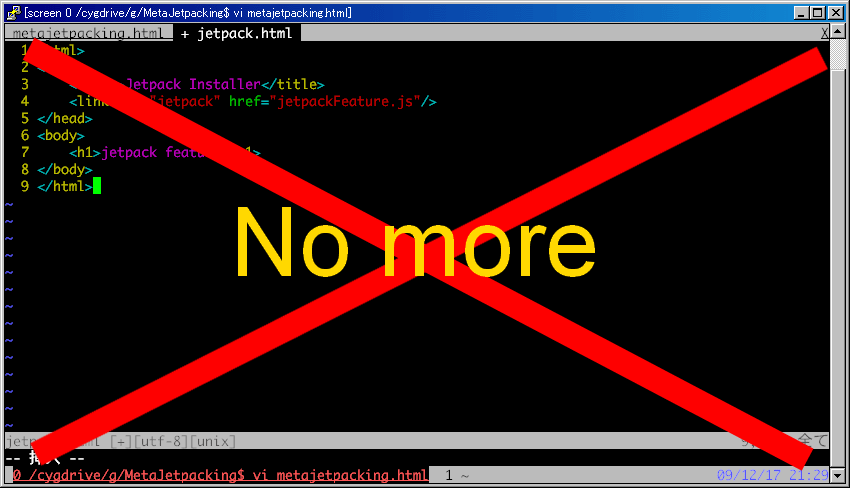

Meta JetpackingMozilla 勉強会@東京 2009-12-19 |
開発効率の向上を
付属のエディタ(about:jetpack)では書きにくい
ヽ(｀Д´#)ﾉ ムキー 書きにくいー
Webからのインストールに特化している
<link rel="jetpack" href="..."/>ヽ(｀Д´#)ﾉ ムキー 面倒過ぎるー
|  |
出来ないならば出来るように作れば良い。
Firefoxならそれが出来る
↓ ↓ ↓
jetpack feature installer
ローカルファイルのインストールを支援するJetpack Feature
Jetpackの内部をハックしよう
ステータスバーのJetpackアイコンをクリックするとDOM Inspectorが起動
JetpackRuntime -> contexts に各featureがある
JetpackRuntime -> contexts -> index -> unsafeSandbox に実行コンテキスト
コンテキストのグローバルオブジェクトにアクセス可能！
デバッグに役立つかも！？
キーボード派のあなたへ
vimperatorのjs,echoコマンド + 補完機能は最強
:echo jetpack.contexts.map(function(c) c.feed.title)
:echo jetpack.contexts[0].unsafeSandbox.jetpack.future.list()
:echo jetpack.jWin.JetpackEnv.futures
:js jetpack.install("~/var/JetpackScripts/jetpack_hack.js")
:js jetpack.uninstall("jetpack_hack")
:js jetpack.reinstall("jetpack_hack")
:js jetpack.refresh("jetpack_hack")
:js jetpack.purge("jetpack_hack")